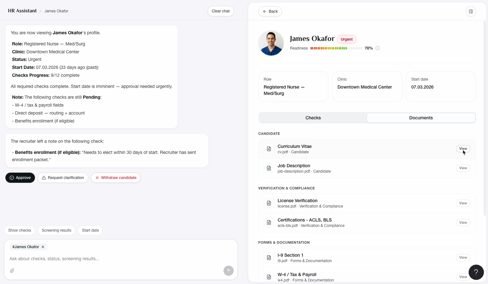
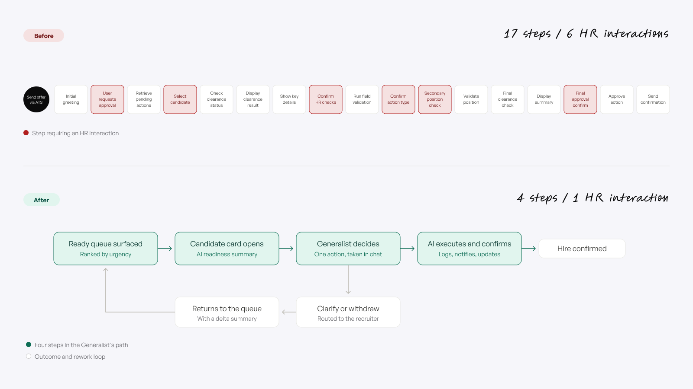
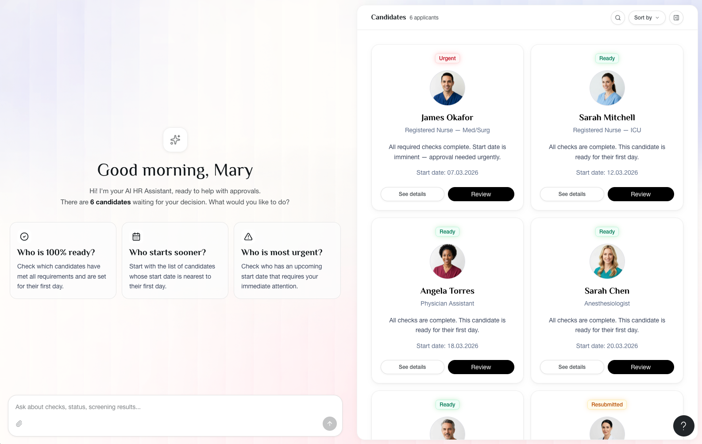

Two weeks to a working answer
AI support for hiring approvals in healthcare

- Constraint
- Two weeks, no brief, no access to users, a domain I had never worked in, and an existing chat tool people had mostly stopped using.
- Decision
- Split the screen: the conversation on one side and the candidates on the other, kept in sync both ways.
- Trade-off
- Keeping the full candidate card always on screen admits the assistant might not be enough on its own. It takes up space and gives people two ways to reach the same information.
- Role
- Sole designer, working with 2 business analysts
- Timeframe
- 2 weeks, starting from zero
- Context
- Hiring process for a healthcare organisation
- Outcome
- A working, clickable AI approval tool. 17 steps with 6 HR touchpoints became 4 steps with 1. Stakeholders responded well.
The situation
A healthcare organisation told us their hiring process was broken, but they didn't know why. It turned out the process took too long and candidates were dropping out halfway through. There was no research, no documentation, no requirements and no access to the people doing the work, and the deadline was fixed. I was the only designer, and I had never worked in healthcare before.
Finding the real problem
Since nobody had defined the problem, I spent the first week on research.
With two business analysts, I looked at it on three levels: how onboarding works in general, how it works in healthcare, and how it worked at this company. I also looked at the organisation itself: what it cared about, which systems it used and which vendors it already worked with.
Then we mapped how approvals actually happened. Between sending a job offer and confirming the hire there were 17 steps, and 6 of them needed HR.

The number of steps was only part of the story. The bigger finding was about the HR Generalist, the person who makes the final call on each hire. To decide on one candidate, they had to collect information from four places: the applicant tracking system, a third-party portal, the health clearance system and an email thread. Most of the time they were deciding without the full picture.
Together the three of us found nine separate problems. In the second week I worked out which of them design could solve and what the interface needed to do about each one, and I made the design decisions from there. These problems shaped the product most:
- Nothing showed what was urgent. A nurse starting in three days sat in the same list as one starting next month. Generalists worked from the top down, so the most urgent candidates often waited the longest.
- Small issues looked the same as blockers. "Cleared with conditions" put everything in one bucket. A pending TB result, which doesn't stop someone from starting, looked exactly like an issue that does. Generalists couldn't tell who was safe to approve.
- They could see status, but not timing. Generalists knew what was still pending but not when it would be done. They often found out a candidate wouldn't clear in time when it was already too late.
- Systems disagreed without saying so. Data came from four systems, each updating on its own schedule. When two of them had different values, the interface showed one and gave no hint there was a conflict.
- No record of who did what. When a start date fell through, there was no log of who did what and when. The Generalist took the blame without the information to explain what happened.
- The existing chat tool was too slow. The company already had a chat tool that suggested next steps and listed who still needed to approve. But with twenty candidates to review in a morning, nobody had time for a back-and-forth about each one. Opening the source systems was faster, so people went back to switching between tabs.
- Returned candidates started from scratch. When a candidate came back after fixing something, the Generalist had to read the whole file again to find what had changed, and sometimes asked about things that were already sorted.
This gave me a clear goal. When the Generalist needs to decide, everything they need should be in one place, and anything unusual should stand out.
Decision 1: Who the AI should help
AI could help in two places.
On the candidate side, it could read documents and fill in forms automatically, warn people about wrong file types or expired certificates, and guide them through the forms. That would improve what came in.
On the Generalist side, it could sort the queue by urgency, summarise how ready each candidate was, flag anything unusual and show what had changed since the last review.
I chose the Generalist side. Better submissions would help, but that wasn't where the process got stuck. The delay happened at the decision, where one person had to pull information from four systems before they could act. Cleaner submissions would have made the decision just as hard to make.
Decision 2: A split screen
For an AI project like this, the obvious thing to build is a chat window. I didn't, and the whole product depends on that choice.
A chat-only tool makes the Generalist ask for everything, even things they could see faster just by looking. That's exactly why the existing tool wasn't being used. A classic list view has the opposite problem: people have to filter twenty candidates themselves every morning, which is the work they wanted to get rid of.
So I split the screen. The conversation is on the left, the candidates are on the right, and the two stay in sync.
If you ask "Who is most urgent?", the list on the right filters to that candidate straight away, and the filter appears as a chip you can remove. The answer changes what you see, instead of only giving you text to read. It also works the other way: open a candidate's card yourself and the assistant switches to that person, with a tag in the input showing who your next question is about.
We kept one rule in mind throughout the project:
If using the AI takes more effort than working without it, people will stop using it. That's a design problem, not a training problem.
A chat that made people type out what they wanted, when they could just click, would have failed on day one.
There was a trade-off. Keeping the full candidate card always on screen means admitting the assistant might not be enough by itself. It takes space and gives people two ways to reach the same information. I accepted that because this is a hiring decision with compliance risk, and people shouldn't have to trust a summary they can't check. It also gave me a way to see whether the assistant was doing its job, which I explain in the metrics below.
Decision 3: Helping people know what to ask
Chat tools often lose people at the empty text field. They open it, can't think of what to type, and go back to the old way.
I solved this in three ways:
- Suggested questions on the first screen. "Who is 100% ready?", "Who starts sooner?", "Who is most urgent?" These are the three questions Generalists actually open the tool for.
- Every answer suggests a next step. After listing what's still missing, the assistant asks: "Would you like to see the full checklist or contact their recruiter?" The person doesn't have to figure out what to do next.
- Quick actions above the input for routine checks: show checks, screening results, start date.

Generalists make decisions right in the conversation: Approve, Request clarification or Withdraw candidate. It takes one click, with no chain of confirmation screens.
Two more things work in the background, and each one solves a problem from the research. Every action is logged with who did it, when, and under which version of the rules. If a start date falls through, you can trace why, and the Generalist doesn't carry the blame alone. And when a candidate comes back after a fix, the assistant opens with a three-line summary of what changed since the last review. Each line links to the field in question, so nobody has to reread the whole file.
Together, these decisions brought the flow down to 4 steps and 1 HR touchpoint, from 17 and 6.
Building it
Design and build happened in week two. I used:
- Gemini Deep Research for the three levels of research
- FigJam for flows, the problem analysis and prioritising features
- v0 for the interactive build
I hadn't used v0 before. I learned it during those two weeks, because a static prototype can't show how talking to an AI actually feels.
The result was a working product you could click through.
How I would have measured this
With AI features it's tempting to measure how much people use the chat. That wouldn't have told me much. I wanted to know whether people made decisions faster and felt more confident about them.
- Time to decision, from opening a candidate to taking action. This is the main number.
- How often people open the full card before deciding. This shows trust. If Generalists kept opening it every time, the assistant wasn't giving them enough. The split screen made this visible.
- How often people ask for help. Every "Request clarification" or "Contact recruiter" points to a specific missing piece of information for a specific candidate, so these buttons also showed where the gaps were.
- Candidates processed per Generalist per day. This is the overall goal, because it connects to time to hire, which leadership actually tracks.
Outcome and limits
We presented the work to stakeholders and they responded well.
The biggest gap was access to real users. There were no interviews and no usability tests. The research was desk research and domain analysis, so everything in the flow is still an assumption until a real Generalist tries it.
If I did it again, I'd first want to hear how Generalists ask questions in their own words before deciding what the assistant should be able to answer.